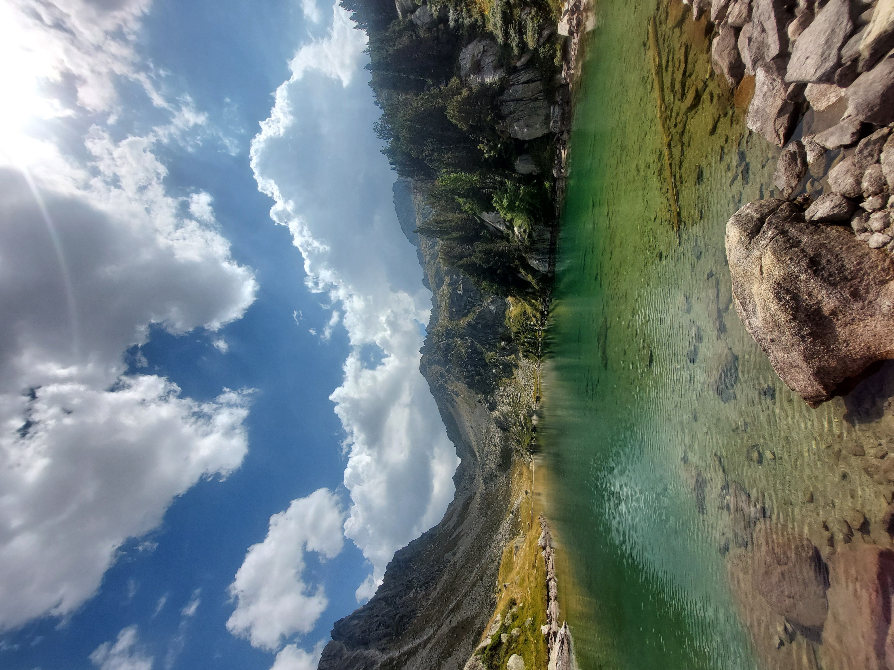
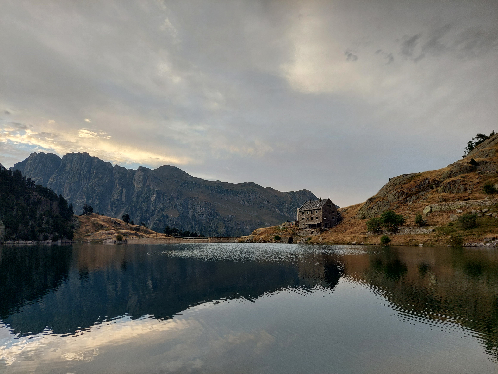
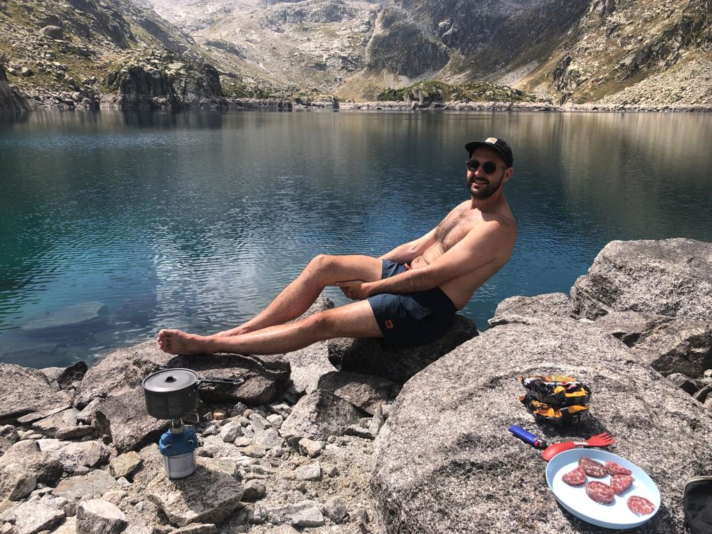
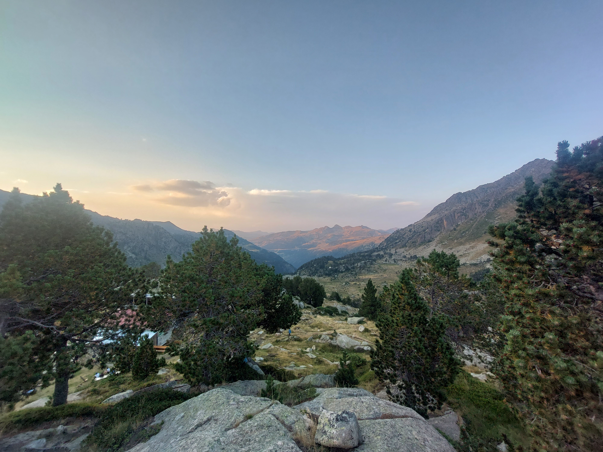
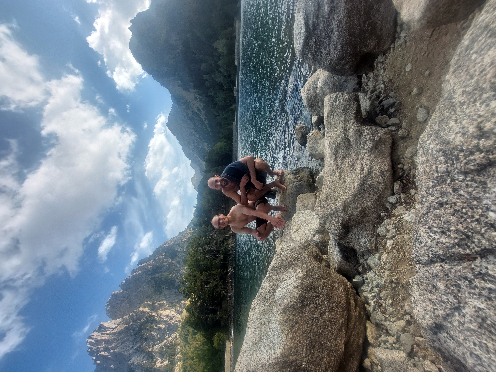
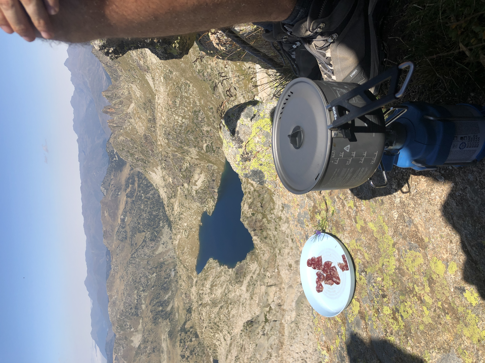
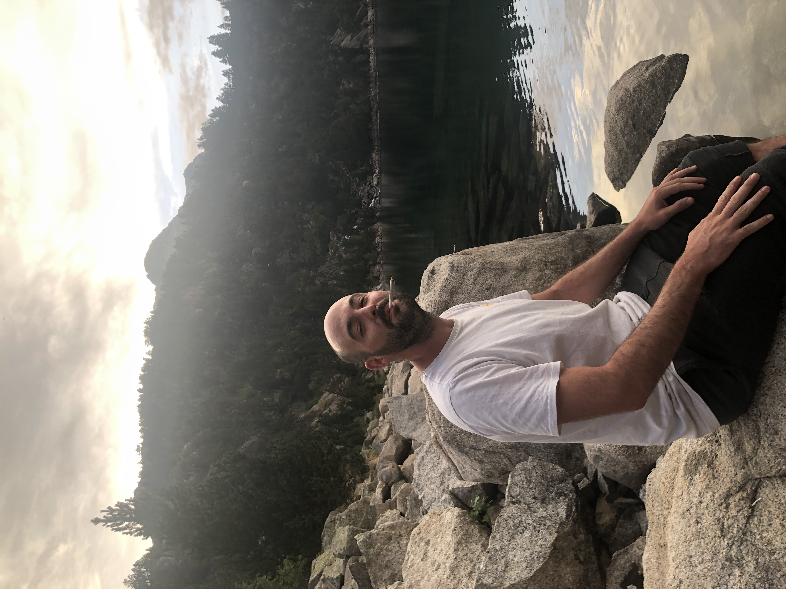
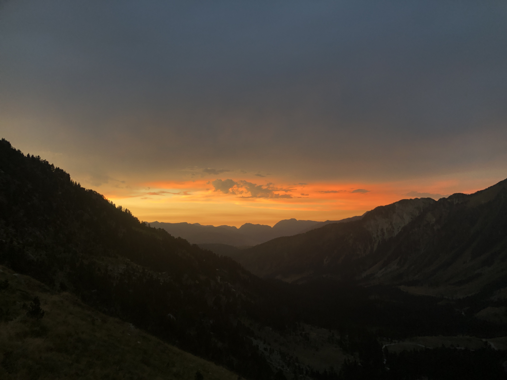
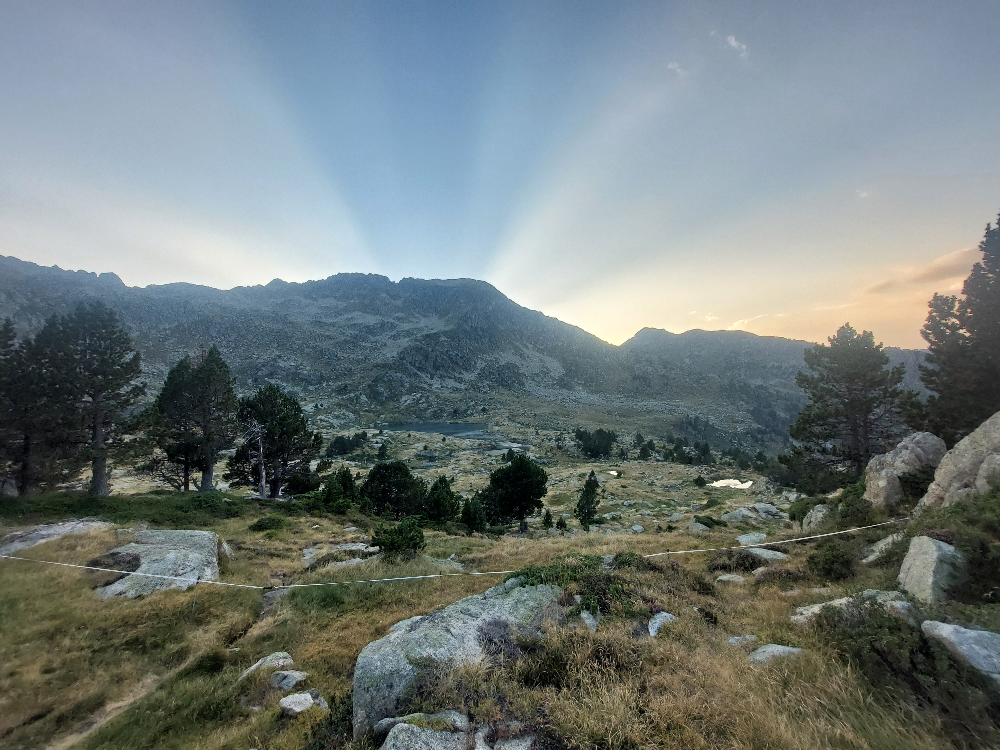
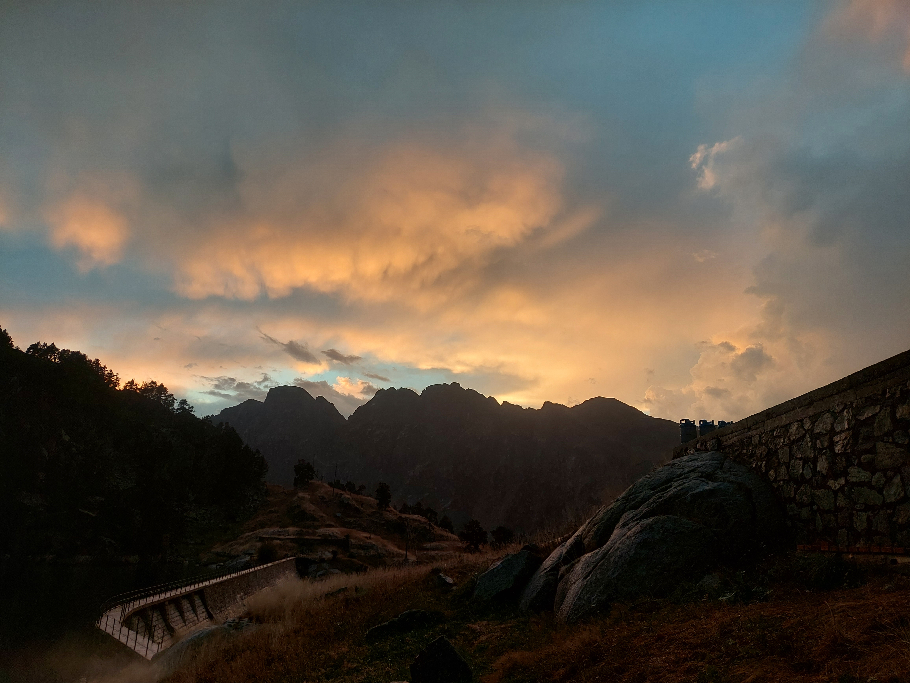

Reisetagebuch
19.08.2023¶
Ein sehr anstrengender Tag bahnt sich an. Nach einer Nacht ohne Schlaf heisst es bei den ersten Sonnenstrahlen alles zusammen zu packen und für Juli, Gigi & Mike die Rückreise anzutreten. Für mich geht die Reise aber weiter Richtung Südwest. Die erste BlaBlaCar Fahrt von 3. Es ist die längste.
Aufgrund von Schlafmangel verschlafe ich aber mehr als die halbe Fahrt. Ist mir etwas peinlich aber nimmt den Small talk Druck weg und ich brauche den Schlaf.
In Carcassonne nehmen mich ein paar freundliche aber wortkarge locals mit in die Stadt. Ich verbringe den Rest des Tages mit Reisevorbereitungen und esse noch das obligate Crêpe in Frankreich. Carcassonne muss bei einem anderen Trip genauer erkundet werden.
20.08.2023¶
Die kurze und eher ereignislose Zeit in Carcassonne endet damit, einen Transport aus der Stadt zu finden. Da mir bereits die 10. BlaBlaCar Fahrt gecanceled wurde erschrecke ich nicht als dies wieder passiert und ich ein Taxi zur Autobahn nehmen muss um die nächste Mitfahrgelegenheit zu erwischen.
An meinem Ziel, Huos, gelange ich aber zu einer wunderbar pittoresken Herberge. Die freundliche Aushilfs-Gastwirtin erklärt mit wie alles funktioniert. An der Garonne finde ein traumhaftes Plätzchen voller Frieden um mich etwas zu entspannen.

Nach kurzem Geplänkel mit den übrigen Bewohnern lege ich mich schlafen, finde aber wegen der Aufregung und der schlechten Musik die ausgestrahlt von den Kopfhörern meines Bettnachbarn durch den Raum dringt, nur wenig Ruhe.
Irgendwann vibriert das Telefon. Los gehts!
21.08.2023¶
Start des einwöchigen Trips durch die Pyrenäen. Am morgen früh geht es los von Huos Richtung Arties. Mit einer sehr sympathischen BlaBlaCar Mitfahrgelegenheit ist die Fahrt recht kurzweilig. Sie wandert ebenfalls einige Tage durch die Pyrenäen.
Ankunft in Arties. Ein sehr schönes Dorf mit viel Charme. Obwohl es wegen der vielen Restaurants sehr touristisch zu sein scheint. Für 10 Euro frühstücke ich äusserst schmackhaft. Ich informiere mich wie ich den überhaupt zum Refugi Colomer komme. Nach Absprache mit Tobi haben wir entschieden, dass ich bereits starte, er trifft einige Stunden später ein. So bin wenigstens ich rechtzeitig da um uns anzumelden und Essen zu reservieren. Ich bin ohne hin schon viel zu hibbelig um 4 Stunden zu warten. Ich erwische einen Bus der mich nicht zum gewollten Ziel bringt und mir somit fast 2h zusätzlichen Weg verschafft, egal.
Die Tour läuft trotz des schweren Rucksacks sehr gut. Wunderschöne Aussicht schon von Anfang an und immer wieder freundliche Menschen anzutreffen.

Plötzlich fühle ich mich etwas von den dunklen Wolken und dem grolenden Donner gejagt. Hinter mir wird der Himmel schwärzer. In dieser doch sehr unbekannten Region möchte ich auf keinen Fall in ein Gewitter geraten und ich halte Ausschau nach Unterständen. Trotz meines beschleunigten Ganges zieht sich der Weg sehr.
Um 6 komme ich, sehr glücklich mein Ziel ereicht zu haben, an. Beim zNacht in Colomers lerne ich eine Gruppe Deutsche/Schweizer Pensionäre kennen die mir über ihre Tour vom Atlantik zum Mittelmeer erzählen die sie in 6 Wochen absolvieren wollen. Sie helfen mir auch Tobi zu kontaktieren. Dieser ist noch immer nicht eingetroffen und das Hüttenpersonal macht sich etwas Sorgen darüber und verdreht die Augen als ich sage, dass er alleine unterwegs ist und ich nicht weiss wo. Er trifft aber kurz vor Einbruch der Nacht noch ein und wir können unsere gemeinsame Reise bei einem Bier beginnen.

22.08.2023¶
Nicht allzu viel geschlafen, da früh schon Stirnlampen herumtänzeln und halblautes Geflüster ertönt. Halb so schlimm, da draussen die Morgenstimmung um 06:00 auch erholend ist.
"Dichtestress" stöhnt Michel der Süddeutsche Pensioner als in seine 'Jungs' begrüssen. Recht hat er, das Gedrängel hier passt nicht so zum bisher so friedvollen Weg.
Auf der Heli-Platform probieren sich einige mittelalte damen an Joga Posen. Es scheint irgendwie als würden sie es aber eher für die 'Likes' machen. Dann gedrängtes Frühstück. Zwieback und Früchtekonzentratserzeugniss.
Egal, mit der super sympathischen Hüttenwartin noch die Rechnung abgeschlossen; 110 Euro.
Mit nicht ganz klarer Route gehen wir nun gemeinsam los, zurück in Richtung Ristanco, wo ich schon am Vortag vorbei kam. Viele Pausen zwischendurch, da kein Stress, viele Gespräche über vieles. Sehr angenehm den ganzen Tag. Eine tiefe Entspannung macht sich schon jetzt breit.
Die Geohraphie ist zwar eher karg, jedoch wunderschön. Überall rauschen Bäche von Tümpel zu Teich zu See. Um jede Ecke warten tiefblaue und türkisene Seen die zu einer Abkühlung einladen. Das Wasser ist nie zu kalt aber immer kühl. Zwischendurch grast immer wieder mal eine Herde Kühe, die sich ebenfalls am kühlen und kritsallklarem Wasser erfreuen.
Ich habe aber keinen kristallklaren Überblick es ist jedes mal weiter als gedacht. Die Perspektive ändert ständig, da man durch die Hügelketten zieht und sich leider an den vielen Seen, die einfach zu zahlreich sind, auch nicht orientieren kann. Der Weg ist aber doch immer klar. Nach den vielen kleinen Pausen kommt die grosse. An einem der schönsten Seen bis jetzt finden wir einen Felsen der perfekt geformt ist und eine unglaubliche Campingküche abgibt.


Boullion, Spiräleli mit Pesto Genovese & Parmecano. Sehr sehr fein
Und sogar noch einen Kaffee gibts bevor wir die letztze Etappe des Tages abschliessen.
Vor Ort in Restanca läuft es an wie schon am Zag zuvor. Ein Bier zur Ankunft, Dusche, Essen. Wieder gute Gesprächspartner am Tisch. Eine Gruppe junger Spanier und zwei deutsche Mädels die mit dem Zelt unterwegs sind. Es fällt auf, dass viele junge Menschen unterwegs sind, dennoch ist es durchmischt und Jung und alt treffen sich.
Auch hier ist es etwas gepackt und überall herrscht Gedrängel. Ich nerve mich etwas darüber aber im Grossen und Ganzen ist die Stimmung angenehm.
23.08.2023¶
Heute ist ein Tag zum Rasten und um die Umgebung etwas zu erkunden. Deshalb kein Stress und mal gemütlich Frühstücken. Zwar wieder gedrängt aber dennoch gut.
Dannach etwas stretchen bei etwas Joga auf dem Helipad (die Ironie ist mir bewusst).

Angeregtes Lesen mit einem Vino Tinto bis zum Mittag. Der Hunger drängt uns aber dazu unsere Sachen zu packen und uns ein lauschiges Plätzchen für die Feldküche zu suchen. In der heute sehr starken Sonne, kommen wir trotz minimalem Gepäck nur schlecht vorwärts. Wir finden auf dem ganzen Weg keinen Schatten indem wir Pause machen könnten und gelangen so direkt zu unserem Ziel, dem Lago de Mar. Es hat sich aber definitiv gelohnt mit der Pause zu warten. Uns erwartet einer der schönsten Seeen bis jetz. Stahlblau und umringt von massiven Felsen. Wir finden schnell eine geeignete Stelle mit Sandstrand und flachen Felsen zum entspannen. Ein Sprung ins Wasser mit aufgeheiztem Körper und toller Aussicht ist einfach nicht zu toppen. Danach geht es ans Kochen mit Abkühlungen zwischendurch. Die heute zubereiteten Ramen können den Pasta von gestern nicht das Wasser reichen. Schmecken aber trotzdem und ich geniesse sie während mir ein Schwarm Fische an den Füssen, die im Wasser baumeln, knabbert. Nach dem Essen wird noch etwas herum geklettert und Steinfiguren gebaut. Leider ist die Zeit wieder schnell vergangen. Ein tiefes Donnergrollen schickt uns zusätzlich auf den Heimweg.

Am zweiten Abend in Restanca haben wir etwas weniger Glück mit den Tischnachbarn und die Gespräche sind monoton und durch Sprachbarrieren eingeschränkt.
24.08.2023¶
Nach einem Tag der Rast steht uns die wohl längste Etappe bevor. Insgesamt rechnen wir mit einem fast 7 stündigen Marsch. Wie sich gezeigt hat, kann es aber auch mehr werden. Die schweren Rucksäcke bremsen uns je nach Steigung stark aus.
Wir können die kühlen Morgenstunden aber gut ausnutzen und kommen sehr gut voran. Den ersten Gebirgszug überqueren wir ohne viel Mühe. Kurz vor dem Übergang begrüsst uns aber die Sonne. Was schön ist aber auch die Temperatur um 10° in die Höhe treibt. Den Weg zu Colomers bringen wir aber in der geplanten Zeit hinter uns. Vor Ort verschnaufen wir etwas und füllen Wasservorräte auf.
Uns steht noch eine Bergkette im Weg, die wir überwinden müssen. Der Weg ist lang, steil und ohne Schatten. Hier fühlt sich das Wandern erstmals nach Arbeit an. Natürlich erreichen wir aber auch dieses Mal den höchsten Punkt und gelangen in ein weites und flach ausfallendes Tal voll mit Wiesen in denen Kühe und Pferde grasen. Ein sehr schöner Anblick. Nach einer Abkühlung in einem weiteren betörenden See gelangen wir zum Refugio Saboredo. Dieses ist kleiner und um einiges charmanter als die bisherigen Refugios. Auf einem Hügel gelegen, der die umliegenden Weiden überragt, hat man wunderbare Aussichten in alle Richtungen.
Das Hüttenpersonal wie auch die übrigen Gäste wirken äusserst sympathisch. Obwohl wir erneut wenig Glück mit unseren Sitznachbarn haben, kommen wir in Kontakt mit einer Gruppe junger Spanier/innen, mit denen wir ein paar Runden Wizard spielen bevor es uns die Nacht verunmöglicht Symbole oder Farben auf den Karten zu erkennen. Die Spanier müssen aber ohnehin früh ins Bett und an ihre Stelle treten zwei deutsche Frauen mit denen wir noch fast bis um Mitternacht die Sterne beobachten. Saboredo ist bisheriger Favorit unter den Refugios und schlägt die anderen klar in Sachen Charme, Gäste und Küche.

25.08.2023¶
An diesem Tag können wir sogar etwas ausschlafen, da die Frühstückszeit flexibel ist und unser Weg heute nicht allzu lang sein sollte. 95 Euro zahlen wir für die Übernachtung und erhalten die Empfehlung einen Umweg durch ein etwas alpineres Terrain zu machen. Der Tipp scheint gut zu sein und wir nehmen ihn dankbar an.
Die neue Route führt uns zu recht felsigen und steinigen Hängen. Wir befinden uns auf dem zum Laufen sicher interessantesten aber auch anspruchsvollstem Teil unserer Route. Fast konstant braucht es Hände und Füsse um durch die Felsen zu klettern. Wir gelangen an eine Felswand, an der ich gerne ein paar Meter Seil dabeigehabt hätte. Zu zweit schaffen wir es aber zuerst die Rucksäcke und dann uns hoch zu bringen. Weiter geht es über Geröllfelder bis auf einen Grad etwas unterhalb von 2800 m.ü.m. Hier oben zieht es ganz kräftig, wir finden aber eine geeignete Nische um zu Kochen und essen mit einer traumhaften Aussicht.
Bei der Pause stellen fest, das der Umweg uns weitaus mehr Zeit kostet als erwartet und es scheint noch ein langer Tag zu werden. Der Abstieg ist steil und der Wind bremst uns zusätzlich aus, wir kommen schlecht vorwärts. Irgendwann erscheint aber das Refugio Amitges in unserem Sichtfeld, es verspricht uns eine kurze Rast und signalisiert das Ende des schwersten Teils der Route.
Jedoch zieht sich der Weg dorthin doch noch etwas. Auf der Terasse des Refugios erfahren wir bei einem Bier und toller Aussicht, das unser Ziel, das Refugio Mallafre, keine erholsame letzte Nacht verspricht. Das Dorf Espot liegt aber sehr nahe am Refugio und präsentiert sich als geeignetes Abschlussziel, das die Abreise vereinfacht.
Mit dieser Erkenntnis und der Erwartung das unsere Route nochmals verlängert wird brechen wir auf in Richtung Mallafre. Der Pfad wird zu einer Schotterstrasse und das Laufen geht fast von alleine. Da wir wieder am Höhe verlieren wird die Vegetation dichter und wir finden uns bald in einem Wald wieder. Märchenhaft gelangen wir zu einem Wasserfall der gleichzeitig die Sicht auf einen tiefblauen, von Tannenwäldern umschlossenen See am Fusse des beeindruckenden Gran Encantat freigibt.

Ich realisiere, das sich die Reise doch schon dem Ende nähert. Der Einblick in die atemberaubende Schönheit dieser Region schafft Hunger nach mehr und ich wünsche mir jetzt schon zurückzukehren.

Das Refugio Mallafre ist wie beschrieben nicht sehr einladent. Im Wald der es Umschliesst würde ich gerne aber noch verweilen. Die Schönheit der Natur in so vielen Facetten ist kaum fassbar.
Wir entscheiden uns also den Weg nach Espot einzuschlagen und vor Ort eine Unterkunft zu suchen. Die Aussicht auf eine heisse Dusche, eine Pizza und ein echtes Bett motiviert uns nochmal.
Vor Abfahrt des Taxis schaffen wir es noch ein letztes Mal im so kristallklaren und lebensspendendenden Wasser der Pyrenäen zu baden. Ein sehr schöner Abschluss für ein sehr schönes Abenteuer.

In Espot finden wir mit Hilfe der hilfsbereiten Locals ein bezahlbares und doch sehr komfortables Hotel. Wir geniessen die wohlverdiente Pizza und legen uns bald danach ermüdet aber glücklich ins Bett.
26.08.2023¶
Wie gewöhnlich rumort morgens um 6 jemand herum. Dieses Mal ist es aber Tobias, der leider so früh auf muss um seine Mitfahrgelegenheit zu erwischen. Die jungen Frauen die wir in Saboredo kennenlernten nehmen ihn mit nach Toulouse. Ich darf noch weiter schlafen und begebe mich dan ausgeruht zum üppigen Frühstücksbuffet. Nach der zweiten Tasse Kaffee kann ich mich wieder mal meiner Lektüre widmen. Nachdem mittag nehme ich den Bus nach Sort und von dort aus nach Barcelona. Schon ein ganzes Stück. 20h unterwegs im Bus.
Nur schon die Reise nach Barca zieht sich irgendwie. Vorallem weil ich schon müde binn aber noch nicht schlafen darf. Ich mache aber trotzdem einen Nap.
In Barcelona angelangt kann ich mir die Beine vertreten und frisches Wasser besorgen. Leider ist es sehr regnerisch. Was sich zwar gut als Busfahrstimmung macht aber weniger zur Stadttour. Die Stadt ist ohnehine nach 20 Minuten erkundet. Die Stadtarchitektur, mit den Blocks mag ja praktisch sein aber ich finde Städte schöner die nicht wie ein Brettspiel aufgebaut sind.
Durch den Regen gibt es Verspätungen im Nachtbusverkehr, der recht zu boomen scheint. Durch die Verspätung entsteht eine Verwirrung und viele irren umher, auf der Suche nach ihrem Bus.
Ich irre ebenfalls. Beobachte aber die verschiedenen Szenen die sich auf der Suche nach einem Bildschirm mit Informationen abspielen.
Impressionen¶








Neues für die Packliste¶
- Seil
- Karabiner
- Tupperware
- plastiksäcke
- Rollmutz
- Wasserfilter
- Abwaschmittel
- Weniger Kleider
- Bouillon
- Feldstecher
- Besserer Schlafsack
- Zelt
- Pasta & Pesto
Erstellt : 8. März 2024